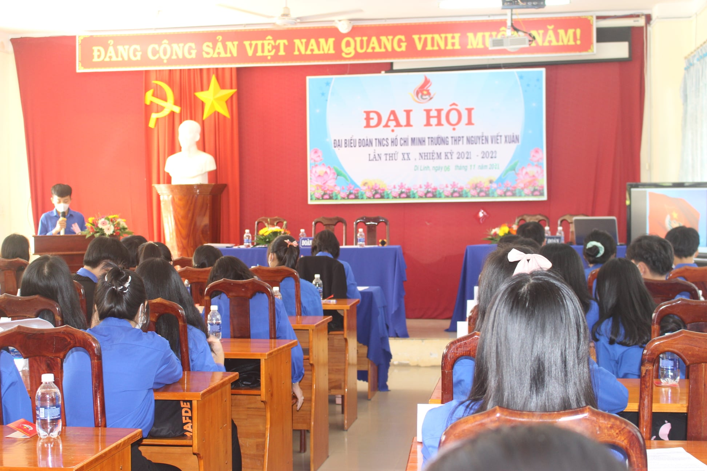

ĐẠI HỘI ĐẠI BIỂU ĐOÀN TNCS HỒ CHÍ MINH TRƯỜNG THPT NGUYỄN VIẾT XUÂN
Thứ ba. 11/1/2022, 21.00 (GMT+7)
* ĐẠI HỘI ĐẠI BIỂU ĐOÀN TNCS HỒ CHÍ MINH TRƯỜNG THPT NGUYỄN VIẾT XUÂN LẦN THỨ XX - NK: 2021-2022* Đại hội Đoàn cơ sở đối với các trường THPT được tổ chức hàng năm theo nguyên tắc tổ chức được quy định trong điều lệ Đoàn TNCS Hồ Chí Minh về nhiệm kỳ Đại hội. Được sự chỉ đạo của Chi bộ nhà trường, sự hướng dẫn của Huyện Đoàn Di Linh, căn cứ vào điều kiện và tình hình tổ chức của nhà trường năm học 2021-2022, chiều ngày 06/11/2021 Đoàn trường THPT Nguyễn Viết Xuân long trọng tổ chức Đại Hội Đại Biểu lần thứ XX, nhiệm kỳ 2021-2022.
Đại hội ĐB ĐTNCS HCM trường THPT NVX là tập hợp 60 Đoàn viên ưu tú đại diện cho tâm tư nguyện vọng của đông đảo ĐVTN thuộc 20 Chi Đoàn trong nhà trường. Đại hội rất vinh dự được sự quan tâm, hiện diện của đồng chí: Lê Thị Đào Loan - Bí thư Huyện đoàn DL; đ/c : Lê Hồng Phú - UV BTV Huyện đoàn; Cô: Lê Thị Hoa Lý - PBT chi bộ - PHT nhà trường; Cô : Lê Thị Nga - PCT Công đoàn nhà trường; Năm học 2021-2022 đang đặt ra cho công tác Đoàn những nhiệm vụ chính trị quan trọng. Là năm học diễn ra các sự kiện chính trị quan trọng và các ngày lễ lớn của đất nước. Đại hội Đoàn trường được xác định là một đợt sinh họat chính trị có ý nghĩa, đóng góp cho công tác chuyên môn của nhà trường, giáo dục cho học sinh về ý thức tổ chức kỷ luật, phát huy tính dân chủ, trong bối cảnh tuổi trẻ cả nước đang tiếp tục tích cực hưởng ứng cuộc vận động “Thanh niên học tập và làm theo tư tưởng, đạo đức, phong cách Hồ Chí Minh”, toàn ngành đang phấn đấu cải cách nền giáo dục. Do vậy, Đoàn trường rất chú ý đến khâu tổ chức, cả về nội dung và hình thức với mục đích tuyên truyền sâu rộng trong ĐVTN về vai trò của ĐVTN. Tại Đại hội các bạn ĐVTN được nghe sự chia sẻ và chỉ đạo của đồng chí Bí thư Huyện đoàn và lãnh đạo nhà trường về công tác đoàn. Bên cạnh đó các bạn cùng lắng nghe và trao đổi với những tâm tư nguyện vọng của ĐVTN nhằm thúc đẩy chất lượng giáo dục của nhà trường cũng như tập hợp giáo dục thế hệ trẻ. Tại Đại Hội này cũng bầu ra Ban Chấp Hành Đoàn Trường khóa mới gồm 15 đồng chí có đủ năng lực, phẩm chất để duy trì và phát huy phong trào Đoàn. Cũng tại ĐH đã bầu trực tiếp đ/c Nguyễn Ngọc Thạch giữ chức vụ Bí thứ ĐT Khóa XX, và tại phiên họp thứ nhất BCH cũng đã bầu 02 đồng chí là: Nguyễn Quốc Việt -11B2 và Bùi Thị Thanh Thanh -11B2 giữ chức vụ PBT Đoàn trường...
Giới Thiệu
Mẹo giúp tăng tư duy đầu tư
Tìm hiểu thêm

LIÊN HỆ
Điện thoại: 0847899999
Email: huyasm@gmail.com
Hướng nghiệp
Tra cứu điểm